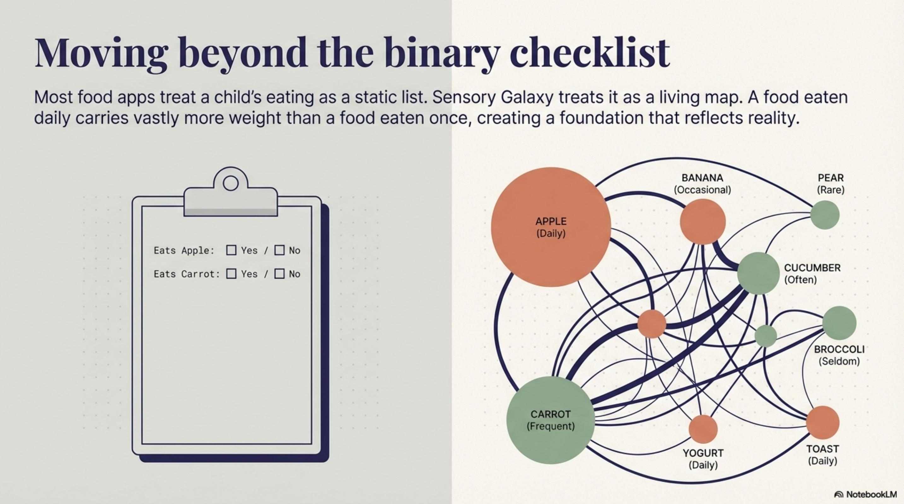

TODAY • FRIDAY, March 13
⏰ 12:00 PM PT (NOW)
POST 1.1: Series Kickoff — Algorithm Deep Dive
Over the next 6 weeks, I'm breaking down the algorithm I built for Sensory Galaxy.
How it works. Why it's different. Why the details matter.
Most picky eating apps are checklist apps: "Your kid eats these. Doesn't eat those."
We built something different. An algorithm that treats eating as a *living map*, not a static list.
Here's what's coming:
Week 1: The problem with checklists + your child's sensory fingerprint
Week 2: Clinical credibility (the SOS framework behind everything)
Week 3: The intelligence layer (how it learns from your kid)
Week 4: How recommendations actually work (the math that makes it land)
Week 5: Growth trajectories (how kids scale beyond their starting point)
Week 6: The full picture (everything connected)
This isn't a marketing pitch. It's a technical breakdown of how we think about selective eating differently.
If you're curious about the *why* behind personalized food recommendations, buckle in. It's a wild ride.
First post on sensory baselines drops Tuesday.
Ready to go deep?
